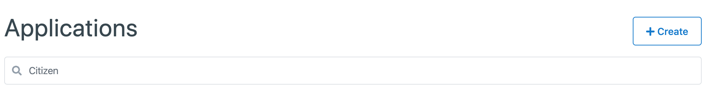

Application Management¶
The CitizenOne Management application allows you to configure settings such as Policies, linked Service Cards, and Service Provider information for your Applications.
The list of all available Applications can be accessed by clicking [Applications] under the [Tenants] tab of the sidebar.

Viewing Applications¶
The initial Applications page displays a list of all of the Applications that have been created for your instance of CitizenOne. Here, you can see a small preview of the Applications’s data, namely the name and if the Application has a Policy attached.
From this page, you are able to filter the displayed list of Applications by their name, click on an Application in the list for a more detailed view, or create a new Application.
If you have only been granted “READ” access to Applications, you will not be able to create, modify, or delete any Applications.
{kind=link}
Creating Applications¶
When you need to set up a new Application, you can click the [+ Create] button in the top right of the initial Application listing page.
{kind=link}
This will bring you to a new view where you will be asked to fill out only the vital information needed to create the Application. Any fields not seen here will be configurable after the Application has successfully been created.
For Applications, the only field required is the name of your new Application, and the Organization it belongs to.

Clicking the [Cancel] button will not save any changes you made to the form, and you will be taken back to the Application listing page.
Clicking the [Save] button will then attempt to make a new Application with your provided details.
Upon success, you will be shown two values: your Client ID and Client Secret. Ensure that you save your Client Secret somewhere secure, as you will not be able to see it again after leaving this page.
{kind=link}
Clicking the [Continue] button will then take you to the new Applications’s details page.
Viewing an Application¶
When you click on or create an Application, you will be taken to a view with multiple tabs. Each tab contains information that you can fill out to help define and customize your Application.

Clicking on these tabs changes the view. As such, if you are editing any forms on a page, ensure that you save any changes, or they will be lost on navigation.
Application General Tab¶
The General tab of an Application contains the basic details that define the Application itself.
From this page, you are able to change the name of the Application, set a homepage, upload the logo of your Application, toggle the “Privacy Scope” setting, and add or remove redirect urls. Here, you may also regenerate your Client Secret if you have lost the original, and it will again be displayed one time to you.
//TODO: explain redirect_urls in the note below under the Policy Scope example
Note
The “Policy Scope” toggle determines whether the unique idenfifier that is assigned to users (of CitizenOne, not Management) will be shared between Applications.
Example) If a user accesses Application A’s Service Card and provides data, the data that the Service recieves will not contain the users orignal identifer, but a new one. If that same user accesses Application B’s Service Card and provides data, again, a new identifer will be issued.
This is done to ensure that data cannot be cross-referenced and compiled to form a single profile on an individual.

Clicking the [Edit] button will enable the fields in the view for change. Ensure your changes are saved before navigating away from the page.
Application Service Cards Tab¶
The job of any application is to provide specific services to the end users. Attaching Service Cards to a CitizenOne Application is how you define the services that an Application has available for use.
To link a Service Card, click the [Edit] button, then the [+ Add Service Card] button. From the dropdown that appears, select your desired Service Card and then either add another Service Card, remove any existing Service Card, and then save or cancel your changes.
If you have the permissions to do so, clicking the blue icon on a Service Card will take you to that Service Card’s page.
{kind=link}
Note
Applications may have many Service Cards.
Example) You are linking up a website, “my-license.com” that allows users to manage some of their license information. This website gives them the ability to renew their license, and purchase insurance. The CitizenOne Application “My License” represents the whole of “my-license.com”, and it would have two Service Cards, one named “Renew my License” and one named “Purchase Insurance”. The Service Cards represent the individual services that “my-license.com” offers.
Application Policy Tab¶
Applications, like both Organizations and Service Cards, are Policy holders. Policies applied to an Application apply to all Service Cards that belong to the Application.
A Policy can be chosen by navigating to the Policies tab, and clicking the [Edit].
{kind=link}
Note
If a Policy is selected, a preview of the Policy text will be displayed on this page, below the Policy selection dropdown.
Application Provider Configuration¶
Some services require more advanced authentication that is provided by the host application. CitizenOne allows for SAML configuration to be set up on the CitizenOne Application so that it may properly integrate with third party services.
To add a SAML configuration for your Application, click the [Edit] and then the [+ Add Config]. From here, you may upload the valid SAML metadata needed to authenticate with the downstream services.
{kind=link}